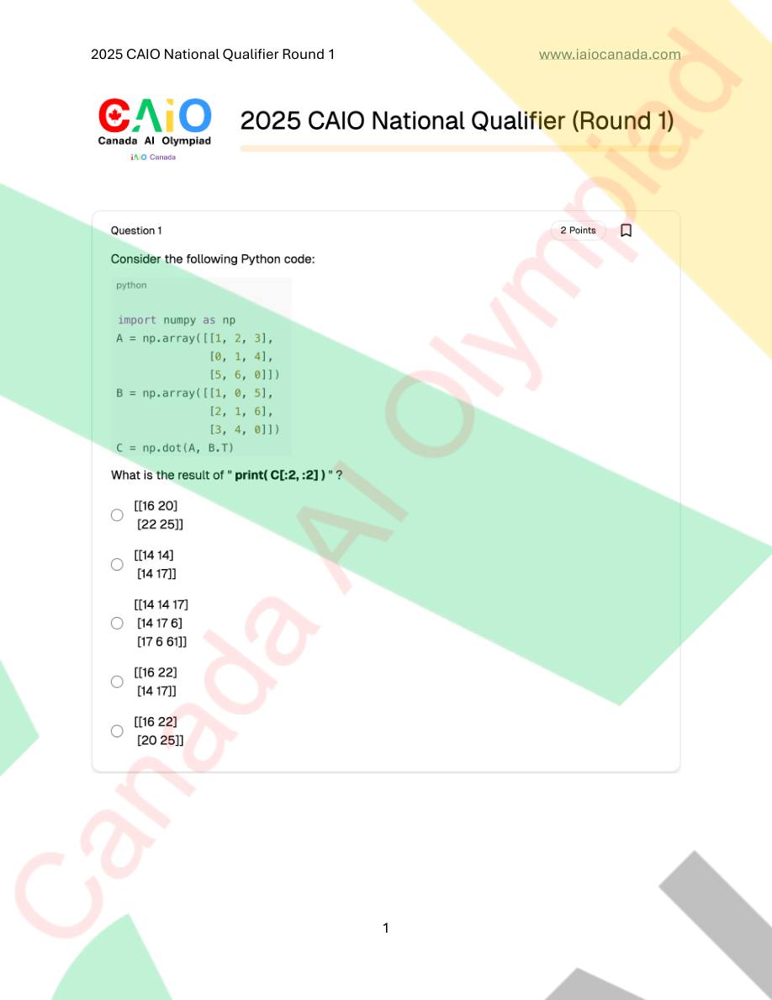

Q01Python / NumPy · 2 分 · 单选题Python / NumPy · 2 points · Single Choice
考虑下面的 Python 代码。print(C[:2, :2]) 的结果是什么？Consider the following Python code. What is the result of print(C[:2, :2])?
import numpy as np
A = np.array([[1, 2, 3],
[0, 1, 4],
[5, 6, 0]])
B = np.array([[1, 0, 5],
[2, 1, 6],
[3, 4, 0]])
C = np.dot(A, B.T)提交后显示参考答案与解析。Submit to reveal the reference answer and explanation.
查看原卷第 1 页 · 核对题面View original page 1 · Check the original question
